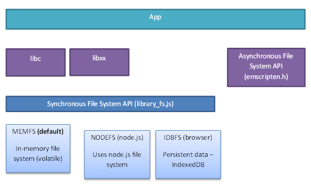

File System Overview
The following sections provide a brief overview of the Emscripten file system environment and architecture. In addition to discussing support for standard C/C++ synchronous file APIs, it briefly discusses the File System API and Emscripten’s Asynchronous File System API.
Emscripten file system runtime environment
Native code and “normal” JavaScript use quite different file-access paradigms. Portable native code usually calls synchronous file APIs in libc and libcxx, while JavaScript allows only asynchronous file access (except in web workers). In addition, JavaScript does not have direct access to the host file system when run inside the sandbox environment provided by a web browser.
Emscripten provides a virtual file system that simulates the local file system, so that native code using synchronous file APIs can be compiled and run with little or no change.
Packaging Files explains how you can use emcc to specify which files you need to include in the file system. For many developers, that may be all you need to do.
Emscripten file system architecture
The main elements of the Emscripten File System architecture are shown below. Most native code will call the synchronous file APIs in libc and libcxx. These in turn call the underlying File System API, which by default uses the MEMFS virtual file system.

MEMFS is mounted at / when the runtime is initialized. Files to be added to the MEMFS virtual file system are specified at compile time using emcc, as discussed in Packaging Files. The files are loaded asynchronously by JavaScript using Synchronous XHRs when the page is first loaded. The compiled code is only allowed to run (and call synchronous APIs) when the asynchronous download has completed and the files are available in the virtual file system.
With MEMFS all files exist strictly in-memory, and any data written to them is lost when the page is reloaded. If persistent data is required you can mount the IDBFS file system in a browser or NODEFS on node.js. NODEFS provides direct access to the local file system, but only when run inside node.js. You can call the File System API directly from your own JavaScript to mount new file systems, and to perform other synchronous file system operations that might be required. There is more information on this topic in File systems.
If you need to fetch other files from the network to the file system then use emscripten_wget() and the other methods in the Asynchronous File System API. These methods are asynchronous and the application must wait until the registered callback completes before trying to read them.